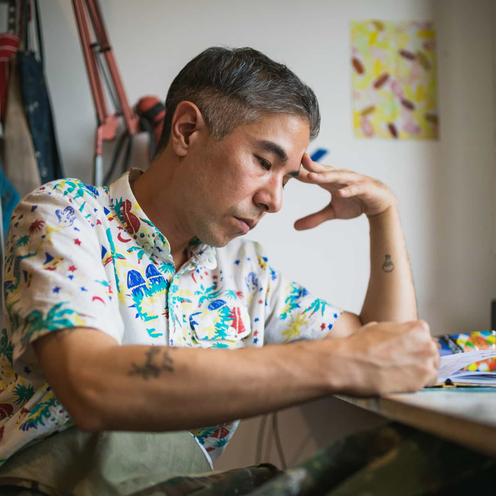

About
Agustín Sirai (La Plata, 1978) es artista visual y docente. Es Licenciado y Profesor en Artes Plásticas por la Facultad de Artes de la Universidad Nacional de La Plata, donde actualmente se desempeña como docente. Su trabajo se desarrolla principalmente en el campo de la pintura, con una práctica que dialoga con la tradición de los géneros pictóricos desde una perspectiva contemporánea.
Ha realizado exposiciones individuales en ARTHAUS Central (2025), Miranda Bosch (2021), Centro de Arte de la UNLP (2018), Praxis de Nueva York (2015), Centro Cultural Recoleta (2011), Teatro Argentino de La Plata (2011) y Jardín Oculto (2010), entre otros espacios.
Entre sus principales reconocimientos se encuentran la distinción Special Selection, categoría Foreigner Group, de los E.SUN Art Awards (Taiwán, 2026), la Beca UADE a las Artes Visuales (2025), el 2º Premio Nacional de Pintura del Banco Central (2021), el 3º Premio Nacional de Pintura UADE (2012) y el 1º Premio Nacional de Pintura del Banco Central (2011). En 2023 recibió una beca de la Pouch Cove Foundation para realizar una residencia artística en Terranova y Labrador, Canadá.